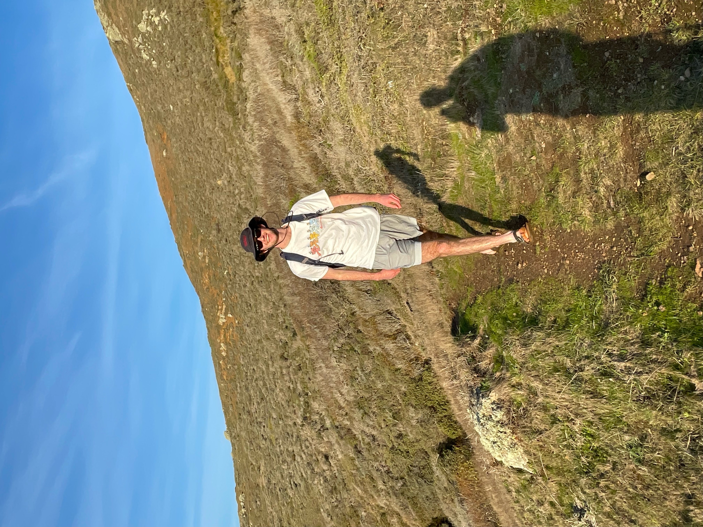

Hi, I'm Owen Akel
I was born in Arkansas, but moved to San Francisco at the age of three where
I attended middle and high school before relocating across the country
to Dartmouth for college (I am currently a '26!). At Dartmouth, I plan to study Computer
Science and Economics, though I am also interested in music and Latin.
Interests
Extracurricularly, I am involved in
TAMID Dartmouth College and the
Dartmouth Investment and Philanthropy Program.
I also like to play basketball (I'm on the club basketball team), practice guitar, listen to
music, and spend time outdoors with my friends.
My Skills
In high school, I worked extensively with Python and Java (and briefly with C and C++ through arduino). I've since
further developed these skills at Dartmouth in CS 1 and 10, as well as gained experience using Selenium and Selenium
WebDriver through my work with TAMID.
This website is my first experience with HTML, CSS, and Javascript. I have really enjoyed teaching myself about webdev
and hope to continue learning and building my skills at DALI!